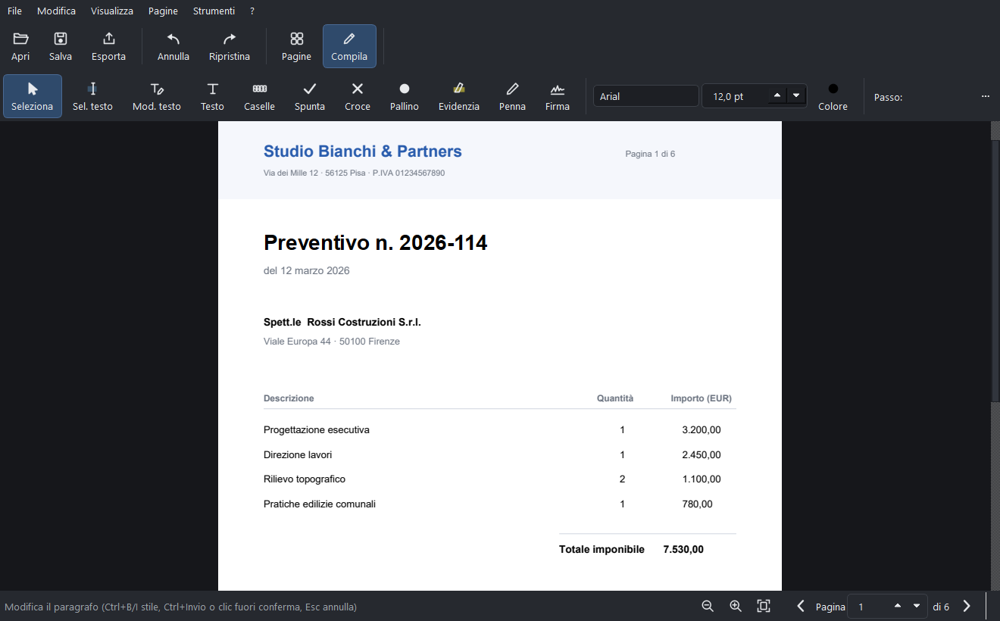

Funzioni
Tutto quello che serve a un documento, dalla prima all'ultima pagina.
Ogni funzione lavora in locale sul tuo computer. Niente moduli aggiuntivi a pagamento: quello che vedi è incluso.
Firmare e certificare
Firma digitale con valore legale
Firma PAdES
Apponi una firma crittografica conforme PAdES con la tua identità PKCS#12 (kit firma, CNS o certificato aziendale, che devi già avere). Firma invisibile o con riquadro visibile sulla pagina.
Verifica delle firme
Controlla chi ha firmato un documento e se è stato modificato dopo la firma. L'integrità viene segnalata chiaramente.
Firma grafica
Disegna la firma con il mouse o scrivila con font corsivi, salva le firme preferite e riusale.

Testo e moduli
Modifica e compila come su carta
Modifica del testo esistente
Correggi parole e righe direttamente nel PDF, mantenendo l'impaginazione: il campo compare esattamente sopra il testo che hai cliccato e le righe vicine restano gli oggetti originali del documento. Lavora su riga e paragrafo, non ri-impagina il capitolo.
Moduli AcroForm
Riconosce i campi interattivi (testo, caselle, menu) e li compila: il file resta un modulo standard, riapribile ovunque.
OCR delle scansioni
Aggiunge un livello di testo invisibile ai PDF scansionati: diventano cercabili e selezionabili, senza alterare l'immagine. Richiede Tesseract (gratuito, un comando).
Caselle, spunte, evidenziatore
Testo a caselle (codice fiscale, IBAN), spunte, croci, evidenziatore e penna a mano libera per compilare qualsiasi modulo.
Organizzare
Pagine sotto controllo
Unisci, dividi, riordina
Trascina le miniature per riordinare, unisci più PDF, dividi un documento, ruota ed estrai pagine.
Numeri, filigrana, Bates
Numerazione pagine, filigrana, numerazione Bates per uso legale, intestazioni e piè di pagina personalizzati.
Confronto documenti
Confronta due versioni e vedi le differenze evidenziate pagina per pagina.
Esporta come immagini
Salva le pagine come PNG o JPEG a 96, 150 o 300 DPI.
Proteggere
Sicurezza e leggerezza
Password AES-256
Cifra il documento con password forte e imposta i permessi di stampa e copia.
Compressione
Riduci il peso del file ricampionando le immagini, mantenendo il testo sempre nitido.
Progetto rieditabile
Salva il lavoro in un progetto .pennino: potrai riprendere le modifiche più tardi, il PDF originale non viene toccato.